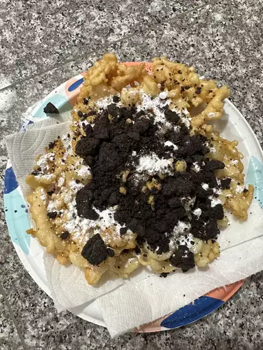

Funnel cakes

Description
This funnel cake recipe will let you enjoy a delicious old-fashioned treat without going to a county fair. You'll need a funnel with a 1/2-inch opening that can hold a cup of batter.
ingredients
- oil
- milk
- eggs
- flour
- Baking powder
- cinammon and salt
steps
- Make the batter.
- Funnel the batter into the hot oil using circular motions.
- Sprinkle the funnel cakes with powdered sugar before serving.